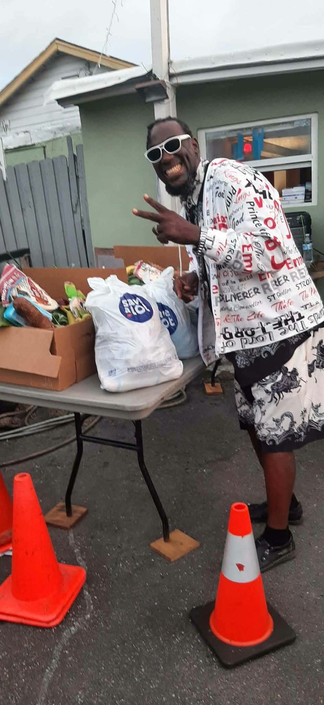
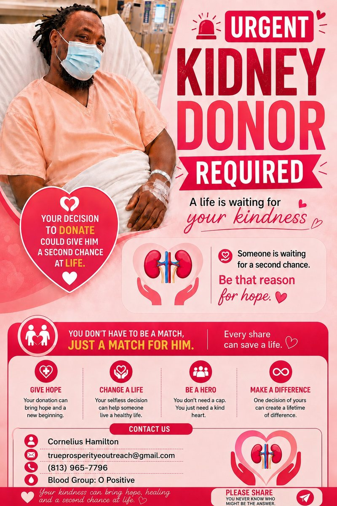

Our Mission
To share the Gospel of Jesus Christ and empower individuals to live victorious, purposeful lives.
God Over Everything
Apostle Cornelius Hamilton leads True Prosperity Evangelist Outreach in Tampa, Florida, to reach the lost, feed the hungry, clothe the needy and restore hope to families.
To share the Gospel of Jesus Christ and empower individuals to live victorious, purposeful lives.
To see lives transformed, families restored and communities impacted through the power of God’s Word.
Soul winning, Bible teaching, youth empowerment, community outreach, prayer and counseling.
Each basket includes a whole turkey, potatoes, rice, milk, eggs, meat and more. Donation requested: $10. A $20 Publix gift card is part of the giveaway. Turkey and ham are also available any time.
8751 N 40th St, Tampa, FL · Apostle Cornelius · (813) 965-7796
“For I was hungry and you gave me something to eat.” — Matthew 25:35
Healthy meals and groceries for families in need.
Dignity and support through clothing assistance.
Tools, guidance and encouragement toward stability.
Peace, clarity and direction through faith.

Founder & Servant LeaderBorn in Miami and raised in Tampa, Apostle Cornelius has spent over a decade taking the church from the pews to the streets. Since 2013 he has fed families, prayed with strangers and given hope to people others walked past.
His belief is simple: a hungry person needs a meal first, and then a friend who will pray with them. That is what God Over Everything means in action.
“I was hungry and you gave me something to eat.”Matthew 25:35Read his story
Real people, real meals, real prayer. This is what happens every week on the streets of Tampa. Watch how one plate of food and one kind word can change a day.

Blood group O Positive. You never know who might be the answer. Please read, pray and share.
Learn more“As iron sharpens iron, so one person sharpens another.”Proverbs 27:17